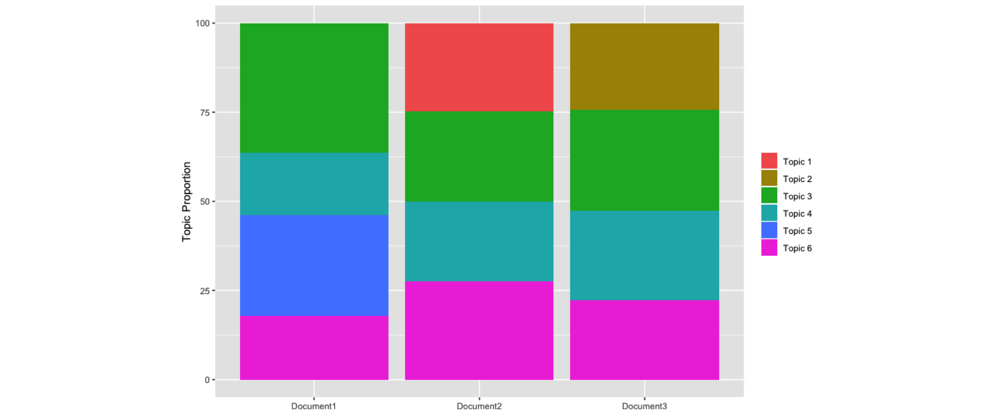
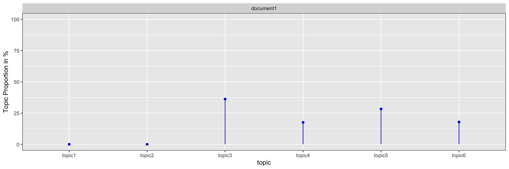

This is the first blog of a six part serie on “Learning, training and scaling topic models: a practical approach in R”. The serie covers:
What are topic models (TM)?
A gentle look into the Bayesian statistics behind TM
How to train TM and visualise outputs in R?
Setting up AWS with R for scaling TM
How does the TM algorithm work under the hood? (To come)
We will use 3 of Jane Austen’s books to illustrate our examples: Sense and Sensibility, Pride and Prejudice and Persuasion. We will download and process the Austen corpus with the help of the gutenbergr package.
Topic models (TM) have proved themselves to be powerful unsupervised tools to uncover textual structure in what otherwise appear to be just plain unstructured text. The idea is that documents consist of different subjects or topics and each topic is made of a collection of words that characterizes it.
Concretly, topic models helps us to programatically uncover two hidden structures in the analysed text:
the proportion of each topic a document is made of
the proportion of each word a topic is made of
The topic proportion per document is based on a finite number of topics that we expect to find in the analysed corpus and is fixed apriori. We will later show how to select an ideal number of topics while training a topic model.

The example above shows the six topics that compose the 3 analysed documents: the topics 3, 4 and 6 are common in all 3 documents while topic 1, 2 and 5 are document specific. Moreover, we can see that 36% of document 1 is made of topic 3, 28% of topic 5, 18% of both topics 6 and 4. The sum of all the topic proportions for all documents equals to 100% or 1. The higher the proportion of topic for a document, the more important this topic is to characterize the document.
The word proportion per topic is computed from all the words in the vocabulary of the corpus we train the topic models on. However, words that belong to the same topic have a higher probability to appear together.
The example above shows the words associated with the topic “Main characters / locations from Austen’s Pride & Prejudice”. The larger the word in the cloud, the more frequent and important the word is for this topic. The word proportion per topic will be high if the word occur often in the topic and is therefore important to characterize the topic. The sum of all the word proportion per topic will sums up to 1 or 100%.
To summarise, the input of a topic model are plain text from documents as such:
#Download Persuasion
p <- gutenberg_download(105) %>% .$text %>% paste0(., collapse = " ")
#Download Pride & Prejudice
pp <- gutenberg_download(1342) %>% .$text %>% paste0(., collapse = " ")
#Download Sense & Sensibility
ss <- gutenberg_download(161) %>% .$text %>% paste0(., collapse = " ")austen <- data.frame(id = c(1, 2, 3),
text = c(p, pp, ss),
stringsAsFactors = F)
austen %>% filter(id == 2) %>% .$text %>% substr(., 50, 428)## [1] " It is a truth universally acknowledged, that a single man in possession of a good fortune, must be in want of a wife. However little known the feelings or views of such a man may be on his first entering a neighbourhood, this truth is so well fixed in the minds of the surrounding families, that he is considered the rightful property of some one or other of their daughters. "The outputs of the topic model are:
The word clouds showing the words with the highest word proportion per topics. Often, the wordcloud is a good tool to estimate the name of a topic. However, it is a great help to have access to some of the authors of the corpus you are analysing. Their help is valuable when choosing the name of the topics the TM have identified and make sure that the rest of your organisation understands what you are refering to when presenting results from those topics.
The topic vector showing the fingerprint or structure of each document (aka topic proportion per document) as such:
doc1 <- data.frame(document = rep("document1", 6),
topic = c("topic3", "topic5", "topic6", "topic4", "topic1", "topic2"),
topic_prop = c(36.20261, 28.29619, 17.87712, 17.52641, 0, 0),
stringsAsFactors = F)
doc1 %>%
ggplot(aes(x = topic, y = topic_prop, ymin = 0, ymax = topic_prop)) +
geom_point(color = "blue") +
geom_linerange(color = "blue") +
facet_wrap(~ document) +
scale_y_continuous(lim = c(0,100)) +
theme(panel.border = element_rect(fill = 0, colour = "black")) +
ylab("Topic Proportion in %")
The fingerprint is a visual DNA of the topics the document is made of. The graph above shows the proportion of the document 1 from the example above.
Topic models are powerful tools for content analysis, article search and personalization of content. The output of the models, namely the topic vectors, are often powerful predictors to other machine learning algorithms for analysing demographics, behaviour or customers actions. And there are many more applications for TM. However, once trained a model will perform poorly on document specific topics that the model have not been exposed to while trained.
There are a few other limitations. Training good topics models requires deciding a priori the number of topics one expects to find. Also, the parametrisation of the TM requires in depth knowledge of the content of the documents we are analysing. In the next chapter we will take a closer look into the LDA algorithm, one of the most popular algorithm for topic models. We will then look at how we can use the Dirichlet parameter to similate the complexity of the documents we are analysing.
Professor Blei KDD Tutorial: http://www.ccs.neu.edu/home/jwvdm/teaching/cs6220/fall2016/assets/pdf/blei-kdd-tutorial.pdf
Professor Blei lectures on Topic models at Machine Learning Summer School (MLSS), Cambridge 2009 part 1 & 2 with slides: http://videolectures.net/mlss09uk_blei_tm/
Blei DM, Ng AY, Jordan MI (2003b). “Latent Dirichlet Allocation.” Journal of Machine Learning Research, 3, 993–1022, page 1009. URL http://www.jmlr.org/papers/volume3/blei03a/blei03a.pdf
Griffiths TL, Steyvers M (2004). “Finding Scientific Topics.” Proceedings of the National Academy of Sciences of the United States of America, 101, 5228–5235. URL http://psiexp.ss.uci.edu/research/papers/sciencetopics.pdf
Grün, B. & Hornik, K. (2011). topicmodels: An R Package for Fitting Topic Models.. Journal of Statistical Software, 40(13), 1-30.
Ponweiser M., “Latent Dirichlet Allocation in R”, Diploma Thesis, Institute for Statistics and Mathematics, 2012. URL http://epub.wu.ac.at/3558/1/main.pdf